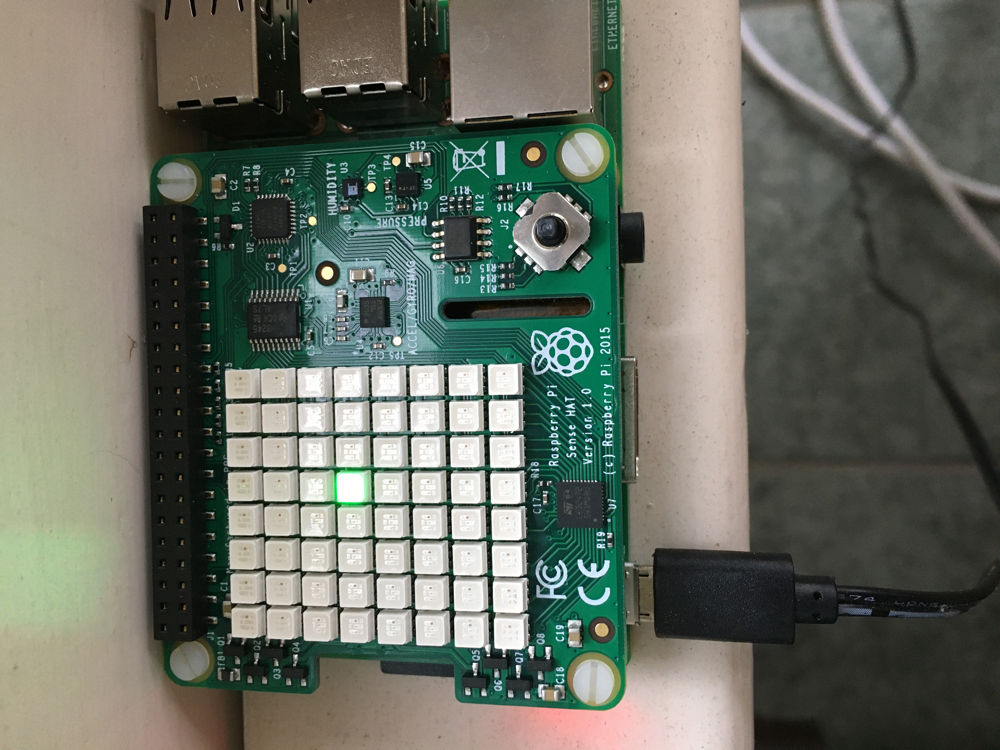

<mat-dialog-content>
    <mat-card>
        <mat-card-title>Weather Station on Pi + MongoDB with .NET Core</mat-card-title>
        <mat-card-content>
            Thanks to <a href='https://github.com/johannesegger/SenseHatNet' target='blank'>SenseHatNet</a> for porting
            the SenseHat
            sensor code into .NET core. Initially I started with Visual Studio Code and then decided to just switch over
            to Visual Studio 2019 because it makes C# development so friendly. My goal here is to just push sensor data
            from my Pi up to a MongoDB hosted on Atlas. I didn't bother writing any visualization tool for this but my
            next step is to use AWS lambda of Vercel serverless stack to expose the MongoDB data via a serverless REST
            API. Quick and dirty but an afternoon of fun and occasional frustration. To be frank, the SenseHat sensor
            package is mounted directly on the PI and that is not good because the temperature it measures is elevated
            by at least 5C because of the heat generated by the PI.
            <div class='div-image-container'>
                
            </div>
        </mat-card-content>
    </mat-card>
</mat-dialog-content>